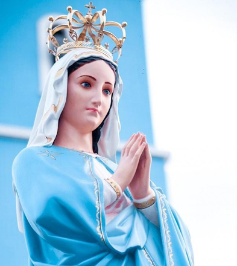

Os Festejos de Nossa Senhora da Conceição são celebrações católicas realizadas anualmente em honra à Imaculada Conceição, com destaque para o dia 8 de dezembro, feriado em diversas cidades brasileiras. O período festivo envolve missas, novenas e procissões, marcando dias de oração e devoção à Virgem Maria. Além da parte religiosa, os festejos também incluem manifestações culturais, como a tradicional Cavalgada da Imaculada Conceição, presente em várias regiões do país, incluindo Pedro II (PI). A comunidade participa ativamente das celebrações, que podem contar com momentos voltados para diferentes públicos, como missas infantis e outras ações de evangelização.